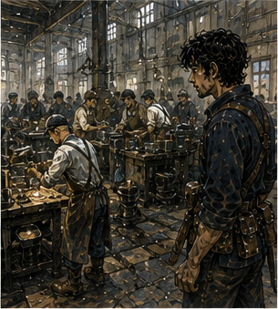
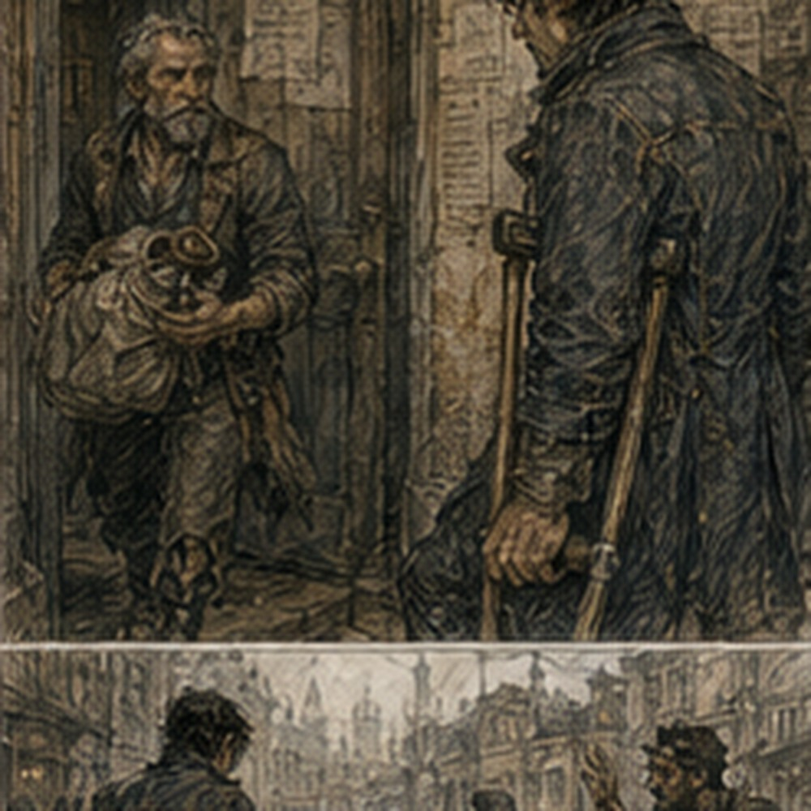

I had plans. This was new enough that I checked twice. Alden had said second bell. Not an assignment. Not training I owed. Not Hessa. Not debt. Sparring. I wanted to go. That was the entire reason.
I ate early, wrapped the healing blister with a thinner strip of cloth, and spent too long deciding whether the wrap would make my sword grip worse. It did. I removed it. The skin underneath was pink and tender but closed. Good. My body felt good. Not perfect. Good. There was a dangerous amount of confidence in that sentence. I ignored it.
The wooden horse watched from beside the washbasin while I buckled on my sword.
“You're not coming.”
It said nothing. Excellent boundaries. I left. Carrow was bright and dry after two days of scattered rain. Workers had opened half the shutters along the market road. Someone was washing mud from a wagon wheel with a bucket and a brush. A baker was arguing with a milk seller about a missing jar. Three children ran past me carrying sticks as if the city had declared war and neglected to inform the adults.
Normal. I reached the Guild early. Of course. Alden was not there. Also normal. I checked the board without meaning to. Then meaning to. Two escort jobs. Warehouse tally. Canal weed clearing. A roof inspection. One request for lane support at the north freight arch. I read that one twice. No name.
Just:
BRONZE OR COPPER
CLEARANCE WATCH
TWO HOURS
NORTH FREIGHT ARCH
Someone else could do it. Good. I walked away from the board. Pell found me before I reached the yard. He came through the side door carrying the regulator in a wrapped cloth bundle. I stopped. He stopped.
“No,” I said.
“I didn't ask anything.”
“You're carrying a problem.”
“I'm carrying a regulator.”
“Same shape.”
Pell looked at the yard. Then at me.
“You busy?”
“Yes.”
That came out fast. Good. Pell blinked.
“With?”
“Alden.”
He waited.
“Sparring.”
Pell nodded.
“All right.”
That should have been the end. He turned. I hated this.
“What did you need?”
Pell looked back.
“Nothing urgent.”
Dangerous phrase.
“What?”
“Customer is mounting the second body today.”
Second body. My attention arrived before permission.
“Same regulator design?”
“Same body shape. New seat.”
“Same clamp?”
“Customer mount.”
“Leather?”
“Leather.”
“Heat?”
“Yes.”
I was already building the comparison. Bench fixture. Hot line. Clamp pressure. Leather interface. Click before flutter. Sound possibly preceding output change. Second body. Field mount. Actual customer. Pell watched my face. I had become predictable to everyone.
“When?”
“Second bell through midday.”
I looked toward the yard. Of course. Pell said, “Vessa can go.”
“Why did you ask me?”
“You heard the click first.”
That was all. Not expertise. Not indispensability. A narrow fact.
“You want me listening.”
“I want another set of ears that knows what it sounded like.”
“And recording?”
“If you come.”
“Who owns the stop?”
“Me.”
“Customer?”
“Owns the line.”
“Who changes the mount?”
“Customer.”
“Who changes the regulator?”
“Me.”
Good. Very good. Too good. I wanted to go. I also wanted to spar. Pell shifted the bundle under his arm.
“Greg.”
“What?”
“You said you're busy.”
“I am.”
“So be busy.”
He turned again. This was intolerable.
“Can the customer do later?”
Pell stopped.
“After midday.”
“How far?”
“East lamp works.”
I knew it. Not far.
“Could we go after?”
“Yes.”
“Why didn't you say that?”
“Because you said you're busy.”
Right. I stared at him. He stared back.
“I can spar first.”
“Yes.”
“And meet you at Pell's after midday.”
“Yes.”
“Does that create a problem?”
“No.”
“Then why are we having this conversation?”
“You started it.”
Fair.
“After midday.”
Pell nodded.
“Don't be late.”
He left. I stood in the hall. I had kept the thing I wanted. And the useful thing. This felt suspiciously efficient. Alden arrived ten minutes later with Berren and a bag of bread.
“You're smiling.”
“No.”
“You are.”
“Bad morning.”
“Liar.”
We went to the yard. Dema was not there. Pessa was. She had a spear and no sympathy.
“Three rounds each,” she said.
“Who put you in charge?” Berren asked.
“No one.”
“Then why?”
“Because you listened.”
Berren looked offended. We listened. The first round was Alden and me. No magic. Padded swords. Light coats. My hand held. Mostly. Alden's second action was better. Not solved. Better. He still started early once. Caught himself. The left hand stayed open. He changed line instead of forcing the second strike. I noticed. Did not comment. Then he hit me in the shoulder.
Hard enough to count.
“Dead,” he said.
“Arm only.”
“You're very dead.”
“Historically survivable.”
“Not to dignity.”
We reset. Second exchange, I got inside his guard. Not because I was smarter. Because my body moved. Fast. Two short steps. Turn. Shoulder past his sword. My padded blade touched his ribs. Clean. I grinned. Alden looked at me.
“What?”
“Nothing.”
“You're pleased.”
“I am nineteen.”
“That is not an answer.”
“It is today.”
He laughed. Then hit me in the leg. Padded. Pain. I swore. He laughed harder. We kept going. The body warmed quickly. Breathing deep. Feet light. Sweat at the back of my neck. My old habits did not fit perfectly. That was becoming less irritating. I stopped trying to make them fit exactly. Alden came high. I slipped outside. Too far. He corrected.
I corrected. For three seconds neither of us did what I expected. Good. That was better. I lost the round. Also good. Berren fought Pessa next. His right foot held. Not perfectly. He protected it after hard pivots. Pessa noticed and made him pivot anyway. Berren called her a bastard. She thanked him. I sat on the low wall. Alden dropped beside me.
“You're faster.”
“Yes.”
“Than last month.”
“Yes.”
“Magic?”
“No.”
He looked at me.
“Body.”
“Mostly.”
“Good.”
That word again. This time I liked it. He drank water.
“What are you doing after?”
“Pell.”
“Work?”
“Yes.”
“Paid?”
I had not asked. I stopped. Alden saw.
“You forgot?”
“I was focused.”
“On getting asked?”
Fuck.
“No.”
He grinned.
“Antonius got to you.”
“How do you know about Antonius?”
“You complain.”
Fair.
“I don't know if it's paid.”
“Then ask.”
“I will.”
“You won't.”
“I will.”
“Five copper says you don't.”
“I am not betting five copper on my own administrative competence.”
“Smart.”
Berren shouted from the yard.
“Greg.”
“What?”
“You're up.”
I stood. The next round was Berren. He moved better than before. Not fully. Enough. He tried to bait me toward the right side. I did not take it. He got annoyed. Good. I liked this. Not winning. This. The yard. People. Sweat.
Getting hit with padded weapons by people who would insult me afterward. I had plans to do it again. That thought landed quietly. Next week. Not some reconstructed future. Next week. Berren clipped my hip. I hit his shoulder. We argued about who died. Pessa declared both of us incompetent. Resolved.
By the time we stopped, my shirt was damp and my legs felt pleasantly heavy. My hand was sore. Not injured. Sore. Alden pointed at it.
“Pell?”
“I can hold a slate.”
“Heroic.”
“Thank you.”
He tore bread in half and gave me some. I ate without asking what it cost. Progress. We left the yard together. At the corner Alden went north with Berren. I went east. No one followed anyone. Good. I reached Pell's workshop twelve minutes after midday. Pell was closing the front shutters.
“You're late.”
“Twelve minutes.”
“Late.”
“You said after midday.”
“I meant after midday when I was ready.”
“That is not a time.”
“Correct.”
Vessa was at the back bench tying the second regulator body into a cloth wrap. She looked at my shirt.
“You smell like boys.”
“That sounds worse than you intended.”
“It was exactly as intended.”
Pell handed me the first regulator.
“Carry.”
I took it.
“Am I being paid?”
Both of them looked at me. Alden won. Pell said, “Four copper.”
“Good.”
Vessa said, “Growth.”
“Shut up.”
We walked to the east lamp works. The customer was not one person. Of course not. It was a narrow manufacturing yard behind a shopfront, with three worktables under an awning and a line of copper tubing running along the wall. Frames hung from hooks. Some brass. Some blackened iron. Workers moved between benches with wire, glass, and small tools. Nothing stopped because we arrived.

A woman in a brown apron raised one hand.
“Pell.”
“Maret.”
She looked at me.
“This him?”
I stopped. Pell did not.
“Greg.”
That was apparently enough. Maret looked me over.
“Bronze?”
“Yes.”
“Why?”
Good question. Pell set the wrapped regulator on a bench.
“He hears things.”
Maret looked at my ears. I disliked this immediately.
“I heard one thing once.”
“Good,” she said. “Hear it again.”
Fair. The actual line was smaller than I expected. The regulator controlled flow through a heated washing feed used during frame finishing. Not fuel. Not dangerous enough to be exciting. Good. The second body was already mounted under the worktable with two leather-faced brackets. Customer hardware. Not Pell's fixture.
The copper feed entered from the left, bent downward, then into the body. The outlet climbed toward a narrow spray bar over a stone trough. Maret pointed.
“We're getting flutter at low flow after the line warms.”
Pell crouched.
“Before?”
“No.”
“First body?”
“Mostly clean.”
“Mostly?”
“Two shifts heard rattle. No output loss.”
Pell looked at me. I understood. Sound. Maybe before output change. Maybe mount. Maybe line. Maybe nothing. I wanted to touch everything. I touched nothing. Pell opened the cloth bundle and set the first regulator on the bench.
“Same mount spacing?”
Maret pointed to a wooden gauge.
“Same.”
“Leather?”
“Same batch.”
“Feed tube?”
“New bend.”
There. Variable. Pell saw it too. Neither of us spoke. Maret did.
“Don't tell me my tube is the problem before you run it.”
“I wasn't,” Pell said.
I had been about to. Not out loud. Probably. A worker started the wash line. Water moved. The copper tube clicked as it warmed. Not the regulator. I knew immediately. Different pitch. Higher. Sharper. I moved closer. Maret said, “Where?”
“Tube.”
“Which?”
I pointed.

“Bend before the body.”
Pell put two fingers near it without touching. Waited. Click. Again.
“Expansion,” he said.
Maret nodded.
“Normal.”
Good. The line warmed. The regulator stayed quiet. Flow low. Steady. Then a softer click. There. My body recognized it before my brain finished.
“Body.”
Pell looked at me.
“Sure?”
“No.”
Good. He smiled slightly. Maret did not.
“Helpful.”
“We need repeat,” I said.
Pell nodded. He did not ask permission. He already had it. They ran the line warmer. Click. Same region. No visible flutter. Maret leaned over the spray bar.
“Output's clean.”
Pell said, “Again.” Third run. Click. Then faint rattle. The spray changed. Barely. Not enough to fail. Enough. Maret saw it.
“There.”
Pell crouched under the table. I moved to the side. Not because he told me. Because I could see the outlet and he could see the mount. Different views. Useful. Maret said, “Stop?” Pell said, “No. Hold.” Line continued. The rattle faded. Flow steadied. Interesting. I wanted another variable. Clamp pressure. Feed bend. Heat. Leather. Body. Seat. No. One at a time.
Pell reached up and touched the left bracket.
“Warm.”
“Expected,” Maret said.
“Hotter than right.”
She crouched. Touched both.
“Little.”
I looked at the copper feed. Left side carried more line heat into the mount. Maybe. Maybe. Pell said, “Shut down.” Maret called it. The worker closed the feed. No one argued. No drama. The regulator cooled. Click. Different pitch. Greg brain activated. Good.
I wrote:
FIELD MOUNT
SECOND BODY
LOW FLOW
CLICK AFTER WARMING
FAINT RATTLE
SMALL OUTPUT CHANGE
RECOVERS WHILE HOT
LEFT BRACKET WARMER THAN RIGHT
Then stopped. Cause unknown.
I added:
CAUSE UNKNOWN.
Pell read over my shoulder.
“Good.”
“Stop saying that.”
“No.”
Maret said, “Can we fix it?” Pell looked at the mount.
“Probably.”
There it was. Probably. Correct.
“How?”
“First I want the first body in the same mount.”
Maret nodded. They swapped. Not me. Pell and Maret's worker. I held the old body. Warm metal through cloth. Physical. Ordinary. I liked this too. That was becoming a problem. First body mounted. Same leather. Same line. Same bend. They ran it. Warm. Tube click. Then nothing. Longer. Still nothing. Pell raised flow. No rattle. Lowered. Small click. No flutter. Again. Same.
Maret looked at the second body in my hands.
“Body.”
“Maybe,” Pell said.
“Seat?”
“Maybe.”
“Spring?”
“Maybe.”
“Then open it.”
Pell took the second body from me.
“Workshop.”
Maret frowned.
“I need the line.”
“You have the first.”
“That one's mine.”
“Yes.”
She looked at him. Then laughed once.
“Fine.”
She pointed at the second body.
“Tomorrow?”
“Maybe.”
“Pell.”
“Tomorrow.”
Good. We packed. No breakthrough. But enough. Outside the lamp works, Pell handed me four copper. I took it. Then he handed me one more. I stared.
“What?”
“Field fee.”
“What field fee?”
“You caught the tube click before we wasted time on it.”
“That was the job.”
“Yes.”
“Then why extra?”
“Because Maret paid extra for same-day field observation.”
“Did she know I was coming?”
“Yes.”
There. Something shifted. Not dramatic. A customer I had never met had agreed to pay for Greg-shaped observation because Pell said I might be useful.
“Was I required?”
“No.”
“Would you have gone without me?”
“Yes.”
“Would it have worked?”
“Yes.”
“Then why?”
Pell stopped walking.
“Because you heard the bench problem.”
“Yes.”
“And today I wanted someone listening while I watched the mount.”
“Yes.”
He waited. That was all. I put the coin away. Five copper. A small job. A specific role. Planned before I arrived. Useful enough to change how Pell divided his attention. Not necessary. I liked that more than I should have. Pell started walking. I followed.
“What are you doing with the second body?”
“Opening it.”
“Today?”
“Yes.”
“Can I come?”
He looked at me. There. Immediate. The day had already given me sparring. Paid work. A clean field result. Five copper. And I still wanted the next thing. Pell said, “You can.” I almost said yes.
Then my stomach made a sound loud enough that Pell heard. He looked at me. I hated being nineteen.
“No.”
Pell's eyebrows went up.
“No?”
“Food.”
“Good.”
“Stop.”
He kept walking. At the corner he said, “Tomorrow afternoon.”
“What?”
“If you want to see the opened body.”
There. Future. Ordinary.
“Tomorrow afternoon.”
“Don't be late.”
“You have no times.”
“I have afternoon.”
“That is not a time.”
“It worked today.”
Barely. We split. I bought food. A lot. Rice, stewed beans, fried fish, something pickled. I sat outside. My legs were tired from sparring. My shoulder hurt where Alden had hit me. My palm was sore. My stomach was aggressively pleased. Five copper from Pell. Debt hours yesterday. Another spar probably next week. Pell tomorrow afternoon. Maybe Jorren tonight. Maybe not. I knew what Edrin had done today.
Not what she had learned. That remained irritating. I did not go ask. The city kept moving. At the next table two laborers argued about axle grease. A courier ate standing up. A woman with blue thread in her hair counted coins into three piles. No one needed me. Some people wanted me. Different. I finished the fish. Then bought a second piece.
Because I wanted it. I walked home slower than usual. Not tired enough to need to. Just slower. At the lodging, there was another note. Not Edrin. Guild. I opened it in the hall.
NORTH FREIGHT ARCH
CLEARANCE WATCH
TOMORROW, FIRST BELL
IF AVAILABLE
There. Another request. Paid. Probably ordinary. I had Pell tomorrow afternoon. No conflict. I could take both. My brain liked that immediately. Work morning. Pell afternoon. Efficient. Useful. Wanted. I stood in the hall with the note. Then remembered Alden. Not tomorrow. No. Jorren? Unknown. Sevren? Unknown. Nothing else. I could say yes. I wanted to say yes. That mattered. Not the money.
Not entirely. Someone had written IF AVAILABLE. They had thought of me. I signed the acceptance line. Then stopped. No. The line was not an acceptance line. It was a receipt line. I laughed. The lodging keeper looked out from behind her desk.
“What?”
“Administrative competence.”
“Bad?”
“Developing.”
She pointed to the bottom.
“Return that to the Guild if you're taking it.”
Right. I went back outside. Not far. The Guild was still open. I returned the note. The clerk took it.
“Greg.”
“Yes.”
“You're already assigned?”
“No.”
“Then why are you bringing this?”
“I want it.”
She looked at the note.
“Tomorrow first bell?”
“Yes.”
“Fine.”
She wrote my name. No ceremony.
“Who asked?”
“North arch clerk.”
“Same one as before?”
“Don't know.”
“Does it matter?”
I asked myself before she could. No.
“No.”
“Good.”
I hated everyone. She filed it.
“Anything else?”
“No.”
I left. At home, the wooden horse had not moved. I put the five Pell copper beside it. Then removed them. The horse was not a bank. I put the coins with the rest. I sat on the bed. Tomorrow first bell, north freight arch. Tomorrow afternoon, Pell. Two things. Both expected. Neither impossible without me. Both real. I took out the notebook.
GUILD:
north freight arch
first bell
clearance watch PELL:
second body
field mount produced click + rattle
first body did not in same mount
open tomorrow afternoon I stared at the page. There was room below.
I almost wrote:
THIS IS WORKING.
I did not. That would have been embarrassing. I closed the notebook. Then opened it again.
At the bottom of the page I wrote:
BUY BETTER GLOVES.
That was worse. Also useful. I left it.